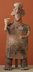

A glaze is wet when it is painted on the clay. Then the clay object is fired, or cooked, in a special oven called a kiln. The glaze becomes a glasslike coating on the clay.
Can you find the sculptures with blue and yellow glazes that have melted and dripped together on the bottom?
 |
 |
 |